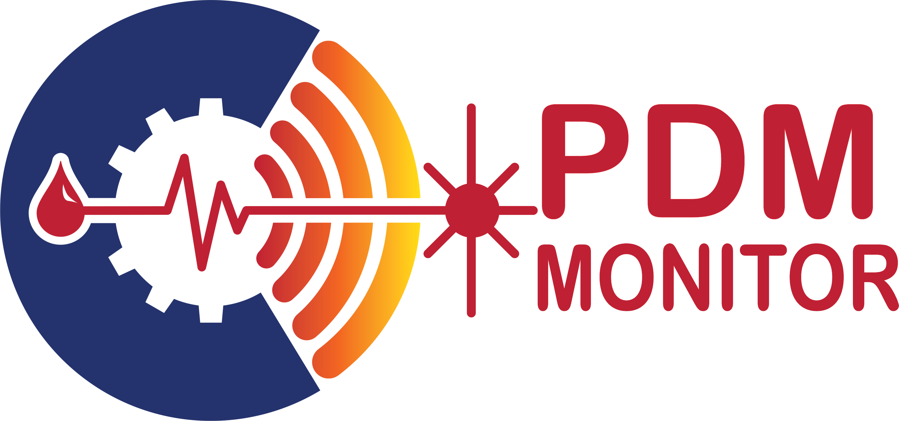

<nav class="navbar navbar-expand-lg navbar-light bg-white">

    <section class="desplegable">
        <li class="nav-item dropdown" style="list-style:none;">
            <a class="nav-link dropdown-toggle" data-toggle="dropdown" href="#" role="button" aria-haspopup="true" aria-expanded="false" style="color: white;background-color: rgb(206, 70, 29);">MENU</a>
            <div class="dropdown-menu" style="background-color: #101e70;">
                <a class="dropdown-item" routerLink="/benefits" style="color: white;">BENFEFITS OF PDM MONITORING</a>
                <div role="separator" class="dropdown-divider"></div>
                <a class="dropdown-item" routerLink="/evolution" style="color: white;">EVOLUTION OF VIBRATION MONITORING</a>
                <div role="separator" class="dropdown-divider"></div>
                <a class="dropdown-item" routerLink="/work" style="color: white;">THE PDM MONITOR IS A 4.0 PREDICTIVE MAINTENANCE SYSTEM</a>
                <div role="separator" class="dropdown-divider"></div>
                <a class="dropdown-item" routerLink="/security" style="color: white;">MONITORED ASSETS EXAMPLES</a>
                <div role="separator" class="dropdown-divider"></div>
                <a class="dropdown-item" routerLink="/parameters" style="color: white;">TYPICAL MACHINES AND VIBRATION ALARMS</a>
                <div role="separator" class="dropdown-divider"></div>
                <a class="dropdown-item" routerLink="/security" style="color: white;">DATABASE SECURITY</a>
                <div role="separator" class="dropdown-divider"></div>
                <a class="dropdown-item" routerLink="/tools" style="color: white;">VIBRATION ANALYSIS TOOLS</a>
                <div role="separator" class="dropdown-divider"></div>
                <a class="dropdown-item" routerLink="/sensors" style="color: white;">DATA COLLECTION CALENDAR</a>
                <div role="separator" class="dropdown-divider"></div>
                <a class="dropdown-item" routerLink="/sensors" style="color: white;">PDM MONITOR SENSORS</a>
                <div role="separator" class="dropdown-divider"></div>
                <a class="dropdown-item" routerLink="/about" style="color: white;">HOW IS THE PDM MONITOR DIFFERENT FROM EXCISTING SYSTEMS</a>
                <div role="separator" class="dropdown-divider"></div>
                <a class="dropdown-item" routerLink="/about" style="color: white;">FUTURE DEVELOPMENTS</a>

            </div>
        </li>
    </section>


    <section class="animated bounceInDown nav-logo-container">
        
        <h4 style="color:#101e70 ;">4.0 PDM Monitoring System
        </h4>
    </section>

    <section class="navbar-infoo">
        <button class="navbar-toggler" type="button" data-toggle="collapse" data-target="#navbarSupportedContent" aria-controls="navbarSupportedContent" aria-expanded="false" aria-label="Toggle navigation">
        <span class="navbar-toggler-icon"></span>
      </button>
    </section>

    <div class="collapse navbar-collapse" id="navbarSupportedContent">
        <ul class="navbar-nav mr-auto">
            <li class="nav-item" routerLinkActive="active">
                <a class="animated bounceInDown nav-link" [routerLink]="['home']">Home </a>
            </li>
            <li class="nav-item" routerLinkActive="active">
                <a class="animated bounceInDown nav-link" [routerLink]="['about']">About</a>
            </li>

            <li class="nav-item" routerLinkActive="active">
                <a class="animated bounceInDown nav-link" [routerLink]="['contact']">Contact</a>
            </li>

        </ul>

    </div>
</nav>